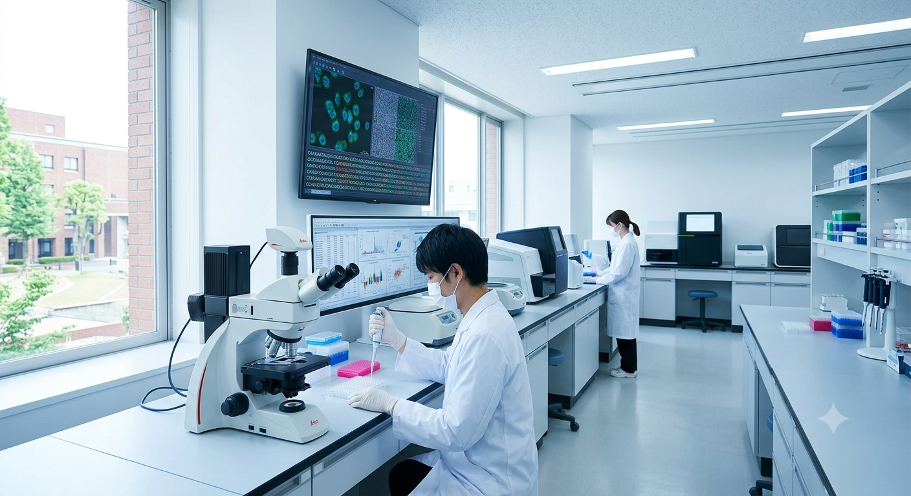
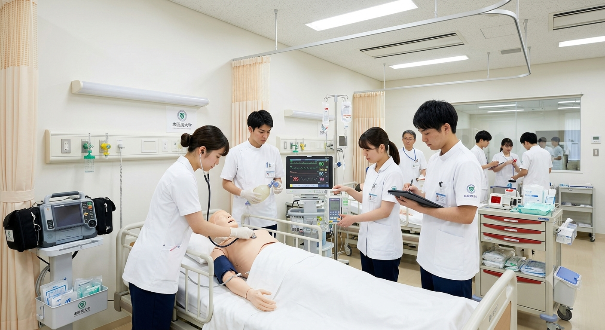
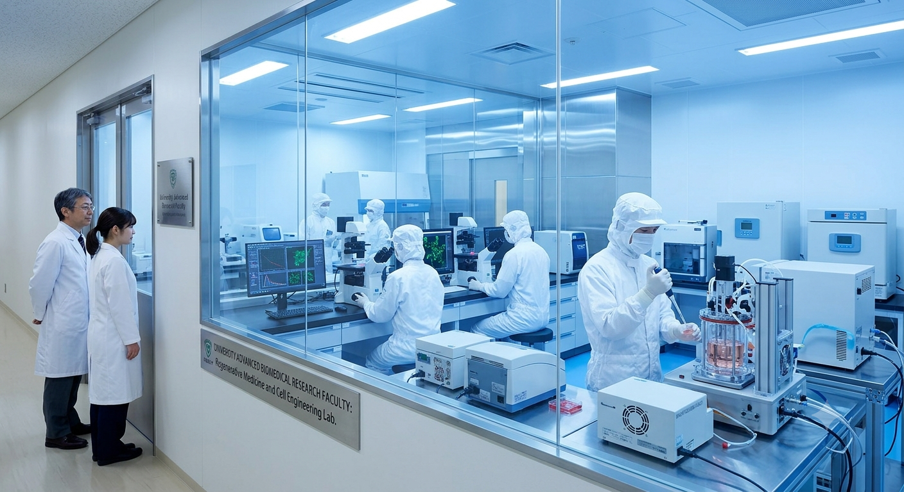

Faculty of Informatics
情報学部ではAI・データサイエンス・ サイバーセキュリティを中心に、 情報技術を活用した課題解決能力を 身につけます。
生命科学と医療を支える4つの専門領域
人体の構造や生命の仕組みを理解し、 医療の土台となる知識を学びます。
病気の診断・治療方法を学び、 患者に寄り添う医療を実践します。
遺伝子や細胞研究を通して、 未来の医療技術を探究します。
地域社会を支える医療と チーム医療を学びます。
人体・生命科学の基礎を修得
病院で実践的な医療を経験
各専門分野の知識と技術を習得
国家試験・医療現場へ
国家試験合格率
臨床実習時間
専門研究分野
附属医療施設
最先端医療を支える研究・実習環境



「講義だけではなく、 実際の医療現場で学ぶ経験を通して、 人の命を支える責任とやりがいを 感じています。」
医学部 4年模擬診察体験や医療設備見学を通して、 医学の世界を体験できます。
学部紹介ページへ戻る